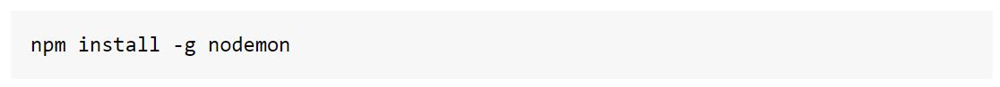
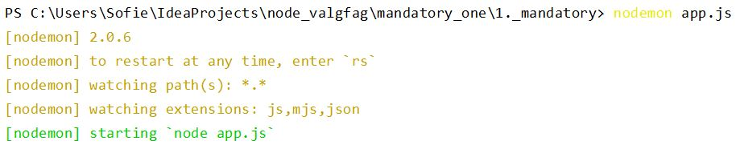

Hvad er Nodemon?
Et modul, der automatisk genstarter ens node.js applikation hver gang der er lavet ændringer.
Installeres globalt således:

For at køre et projekt med nodemon, skal man skrive nodemon (+ navnet på den fil der skal køres)
